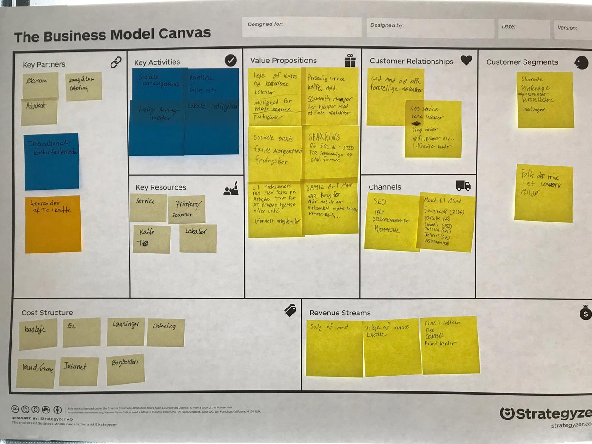
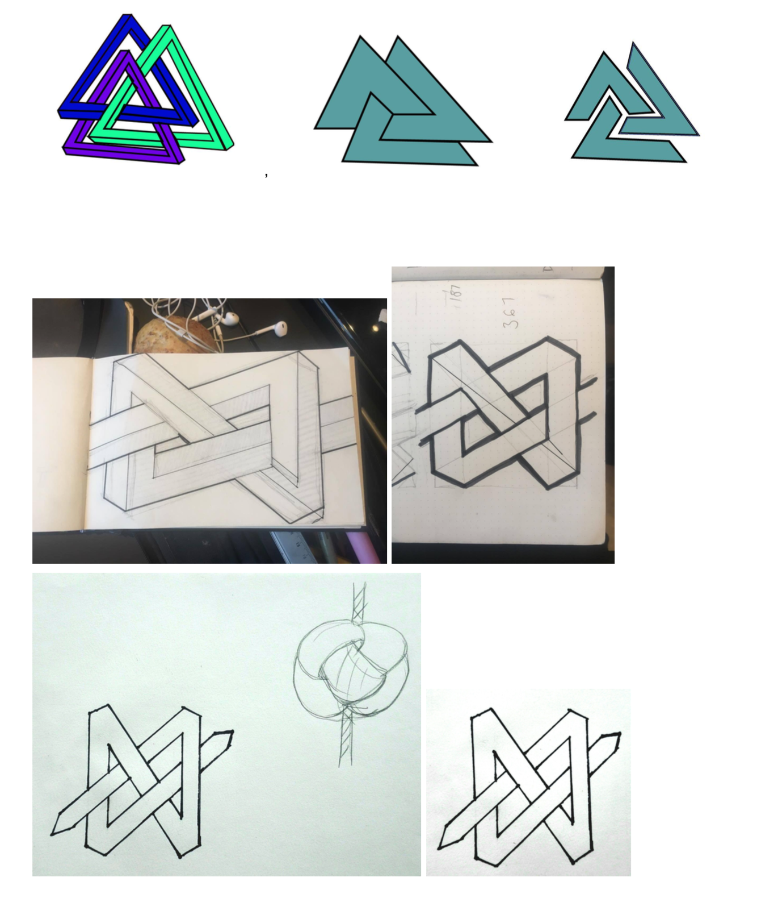
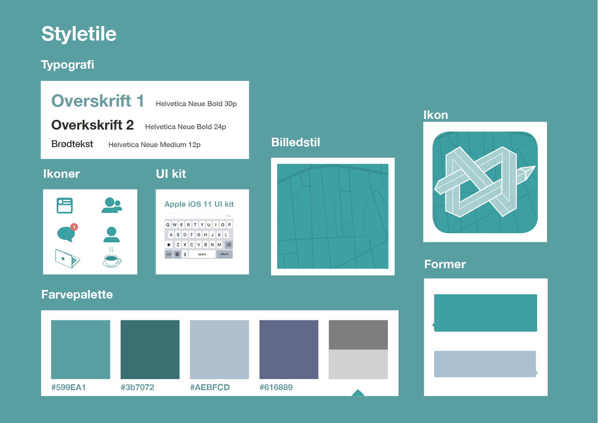
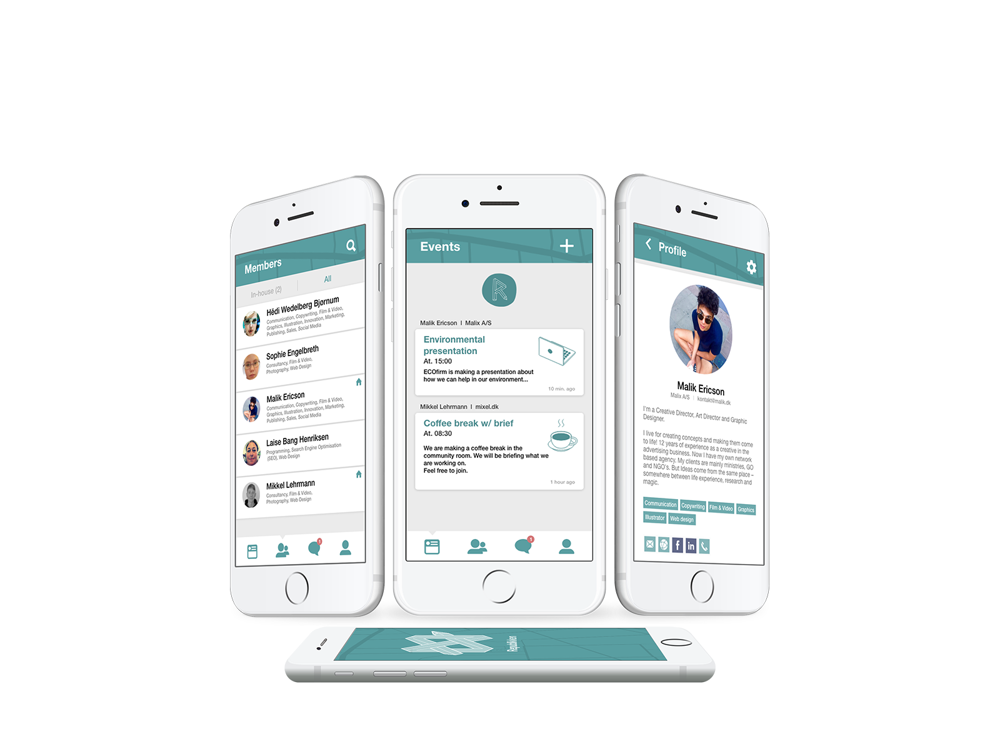

I vores andet projekt i grundlæggende UX fik vi til opgave at udvikle en prototype til en app for kontorfællesskabet Republikken. Vi blev introduceret til stedet og fik et oplæg om hvad det var for en virksomhed. Republikkens overordnede problemstilling lød på ‘Hvordan kan Republikken styrke interaktionen mellem medlemmer gennem en ny app?’
Vores endelige udgangspunkt for appen var: At give personerne i et kontorfællesskab overblik over dagen og give dem mulighed for at mødes på mere eller mindre forpligtende vis, på eget initiativ. Det ville vi gøre ved følgende funktioner.
Se det færdige resultat her
Experiencemap
Business Model Canvas for Republikken
Inspiration til ikon
Styletile med Endelige ikon
Mockup af app
Projektet er lavet i samarbejde med mine medstuderende Laise Bang, Sophie Engelbreth, Mikkel Lerhmann, Hedi Bjørnum. Vi arbejdede udfra projektstyringsværktøjet Scrum, så der var derfor en varieret arbejdsfordeling. Men vi holde hele tiden hinanden opdateret, så jeg har haft overblik over hele processen.
Jeg har arbejdet i følgende programmer og programmerings sprog.